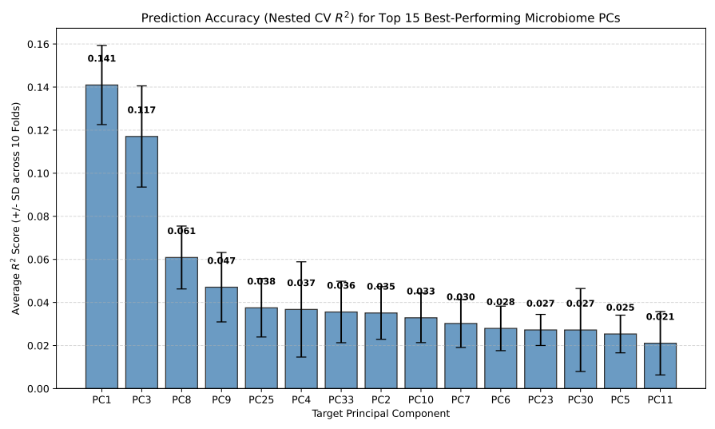
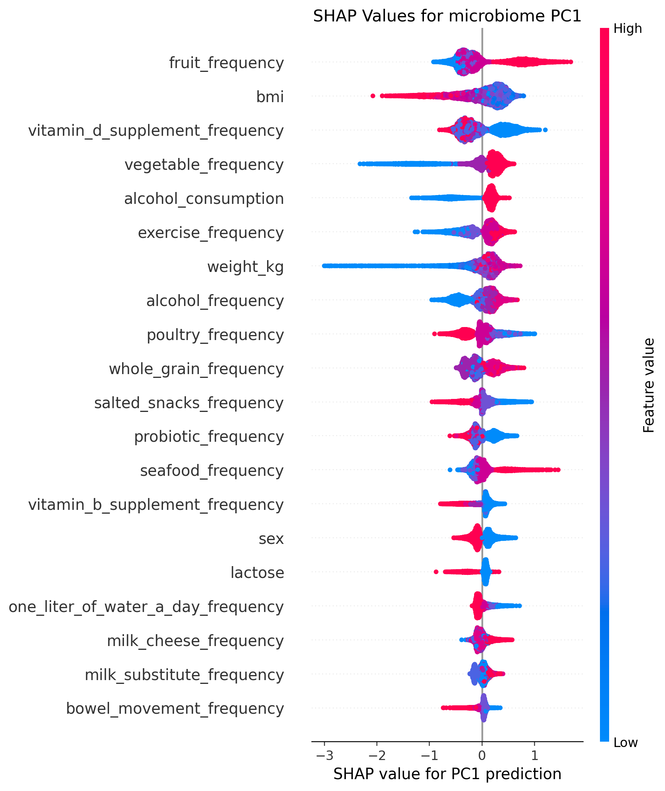

Graduate research · University of Toronto / CAMH · 2024–2026
Learning from the
lifestyle–microbiome connection.
I developed ML-LAMP to predict microbiome patterns from lifestyle information, then explored how the projected scores relate to cognition and health in a separate population dataset.
A complete research workflow, from harmonizing data to evaluating models and interpreting their limits.
Train & validateUK Biobank
Project & analyze
The question
When one cohort has data another does not.
Large studies often contain lifestyle and cognitive information without stool microbiome measurements. Could models trained in the American Gut Project generate useful microbiome proxies for association testing in UK Biobank?
My contribution
From preparation to interpretation.
Under Dr. Daniel Felsky’s supervision, I developed the analysis workflow, harmonized shared variables, trained and evaluated models, and interpreted the projected scores. The work built on an existing processed microbiome resource and guidance from my supervisor and advisory committee.
Prepare
Harmonize lifestyle variables, handle missing values, and summarize microbiome variation with principal component analysis.
Evaluate
Train random forests and use nested cross-validation to separate model tuning from held-out evaluation.
Interpret
Use SHAP to explain predictions, then examine associations of projected scores with cognition and health outcomes.
Key takeaway
Lifestyle information recovered a modest portion of microbiome variation. The projected scores supported association testing, with clear limits on what could be inferred.
Evidence from the analysis
Select a figure to inspect it at full size.


How much signal can the model recover?
Mean nested cross-validation R² in the American Gut Project, with standard deviation across ten outer folds. Prediction accuracy varied across microbiome components.


What contributes to a prediction?
SHAP values explain the behaviour of the PC1 model. Predictor contributions are distinct from causal effects.

Prediction and association tell different stories.
Stronger cognition associations did not always accompany more accurate microbiome-component predictions. Both stages matter when interpreting projected scores.
Figures: Hongrui Liu, MSc research, University of Toronto, 2026. Supervisor: Daniel Felsky. Original figure excerpts.

Research communication
The project, at a glance.
The ML-LAMP poster brings the question, workflow, and findings together in one visual overview.
The poster and thesis figures represent their respective analysis versions.
Download updated poster PPTX · 1.4 MB